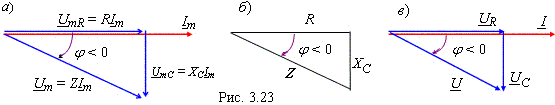

Построим ВД в соответствии с уравнением (2.41). Начнём построение с вектора тока Im, который откладываем, как и вектор напряжения UmR, вдоль оси ox. Вектор напряжения UmC отстаёт от вектора тока Im по фазе на угол π/2, а вектор напряжения Um = UmR + UmC. Из векторной диаграммы (рис. 2.23, а) видно, что ток i(t) в RC-цепи опережает приложенное к цепи напряжение u(t) по фазе на угол φ.
Векторная диаграмма для действующих значений напряжений и тока представлена на рис. 2.23, в, где ток I = U/Z.
